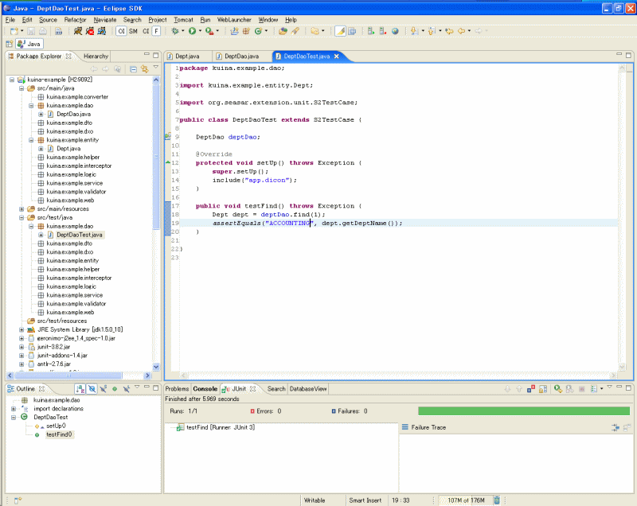

スタンドアロン編
Eclipseプラグイン「Dolteng」を使用すると簡単にKuina-Daoを試すことができます． 動画版はこちら ．
Kuina-Daoプロジェクトの作成
Doltengを使用してKuina-Dao用の新規Javaプロジェクトを作成しましょう．
- メニューから「File」－「New」－「Project」を選択してください．
- 「New」ウィザードが開きます．
- 「Chura」－「Chura Project」を選択して「Next」ボタンを押下してください．
- 「Create a Chura Project」ページが表示されます．
- 「Project name」に"
kuina-example"と入力してください． - 「Root Package Name」に"
kuina.example"と入力してください． - 「Project Type」で「Kuina-Dao Only」を選択してください．
- 「Finish」ボタンを押下してください．
kuina-exampleプロジェクトが作成されます．
Kuina-Daoを使用するために必要なJarファイルは全て揃っています．
また，サンプル用のデータベースも作成されています．
ここでプロジェクトをビルドしておきます．
kuina-exampleプロジェクトを選択して右クリック「Build Project」を選択してください．
H2 Database Engineの起動
DbLauncherを使用してH2 Database Engine を起動します．
- 「
kuina-example」プロジェクトを右クリックして「H2」－「Start H2 Server」を選択してください． - 「
kuina-example」プロジェクトにH2が起動したことを示す緑三角のマーカが表示されます． - 「Console」ビューにH2のメッセージが表示されます．
サンプルデータベースの確認
H2のサンプルのデータベースを確認しましょう．
- 「
kuina-example」プロジェクトを右クリックして「H2」－「View Database Manager」を選択してください． - WebブラウザにH2のログイン画面が表示されます．
- 「JDBC URL」が"
jdbc:h2:tcp://localhost:9092/demo"を入力してください． - 「接続」ボタンを押下してください．
- Webブラウザに「H2 Console」画面が表示されます．
- 左のペインにDoltengが作成したテーブル
DEPTとEMPが表示されています．
- 左のペインで"
DEPT"をクリックしてください． - 「SQLステートメント」テキストエリアに"
SELECT * FROM DEPT"が入力されます． - 「実行」ボタンを押下するとSQLが実行されます．
DatabaseViewの表示
DoltengでテーブルからエンティティクラスやDaoインタフェースを生成するために「DatabaseView」ビューを表示します．
- メニューから「Window」－「Show View」－「Other」を選択してください．
- 「Show View」ダイアログが開きます．
- 「Dolteng」－「DatabaseView」を選択してください．
- 「OK」ボタンを押下してください．
「DatabaseView」ビューが表示されます．
「kuina-example」－「jdbc.dicon」－「PUBLIC」を開くとサンプルデータベースに含まれる2つのテーブル
DEPTとEMPを確認することができます．
DeptエンティティとDeptDaoの作成
Doltengを使用してエンティティとDaoを生成しましょう．
- 「DatabaseView」で「
DEPT」テーブルを右クリックして「New Dao or Entity」を選択してください． - 「New Entity」ウィザードが開きます．
- 「Finish」ボタンを押下してください．
エンティティクラスDeptおよびDaoインタフェースDeptDaoが生成されます．
DeptDaoには基本的なメソッドが定義済みなのですぐに使うことができます．
DeptDaoTestの作成と実行
主キーを指定して
Deptを検索する
テストクラスを作成しましょう．
src/test/javaフォルダにあるkuina.example.daoパッケージを選択して 「New」－「Class」を選択してください．- 「Name」に"
DeptDaoTest"と入力します． - 「Superclass」に"
org.seasar.extension.unit.S2TestCase"を入力します． - 「Finish」ボタンを押下します．
作成されたテストクラスにフィールドとメソッドを追加してください．
public class DeptDaoTest extends S2TestCase {
DeptDao deptDao;
@Override
protected void setUp() throws Exception {
super.setUp();
include("app.dicon");
}
public void testFindTx() throws Exception {
Dept dept = deptDao.find(1);
assertEquals("ACCOUNTING", dept.getDeptName());
}
}
テストを実行してください．
グリーンバーが表示されれば成功です． 「Diigu で処理されていません。クリーンビルドしてください。」という メッセージが表示されてテストが失敗した場合は，プロジェクトをクリーンビルドして再度テストを実行してください．
EmpエンティティとEmpDaoの作成
- 「DatabaseView」で「
EMP」テーブルを右クリックして「New Dao or Entity」を選択してください． - 「New Entity」ウィザードが開きます．
- 「Finish」ボタンを押下してください．
エンティティクラスEmpおよびDaoインタフェースEmpDaoが生成されます．
EmpとDeptの関連の設定
EmpとDeptの間に関連を設定しましょう．
EmpクラスのフィールドdeptIdと メソッドgetDeptId()/setDeptId(Integer)を削除してください．Empクラスに関連のフィールド及びgetter/seterメソッドを追加してください．
@ManyToOne
@JoinColumn(name = "DEPT_ID")
private Dept dept;
public Dept getDept() {
return dept;
}
public void setDept(Dept dept) {
this.dept = dept;
}
Deptクラスに関連のフィールド及びgetter/seterメソッドを追加してください．
@OneToMany(mappedBy = "dept")
private List<Emp> employees;
public List<Emp> getEmployees() {
return employees;
}
public void setEmployees(List<Emp> employees) {
this.employees = employees;
}
EmpDaoにメソッド追加
Kuina-Daoでは，メソッドを定義するだけである程度複雑な問い合わせも可能です． 部署名を指定して従業員を検索するメソッドを追加しましょう．
EmpDaoに次のメソッドを追加してください．
public List<Emp> findByDeptName(String dept$deptName);
このように，問い合わせ条件を引数の名前で指定
します．
ここでは，$で区切ることで
関連先エンティティの
プロパティを問い合わせ条件
としています．
EmpDaoTestの作成と実行
EmpDaoをテストするためのクラスを作成しましょう．
src/test/javaフォルダにあるkuina.example.daoパッケージを選択して 「New」－「Class」を選択してください．- 「Name」に"
EmpDaoTest"と入力してください． - 「Superclass」に"
org.seasar.extension.unit.S2TestCase"を入力します． - 「Finish」ボタンを押下してください．
- 作成されたテストクラスにフィールドとメソッドを追加してください．
EmpDao empDao;
@Override
protected void setUp() throws Exception {
super.setUp();
include("app.dicon");
}
public void testFindByDeptNameTx() throws Exception {
List<Emp> empList = empDao.findByDeptName("ACCOUNTING");
assertEquals(3, empList.size());
for (Emp emp : empList) {
System.out.println(emp.getEmpName() + " : "
+ emp.getDept().getDeptName());
}
}
テストを実行してください．
グリーンバーが表示されれば成功です． 「Diigu で処理されていません。クリーンビルドしてください。」という メッセージが表示されてテストが失敗した場合はクリーンビルドして再度テストを実行してください．
SQLを確認する
実行されるSQLを確認しましょう．
src/main/resourcesフォルダにあるlog4j.propertiesファイルに 以下の内容を追加してください．
log4j.category.org.hibernate=DEBUG, C log4j.additivity.org.hibernate=false
EmpDaoTestを実行してください．
「Console」ビューに次のようにSQLが表示されます．
DEBUG 2007-06-02 06:12:26,812 [main]
select
emp0_.id as id1_,
emp0_.EMP_NO as EMP2_1_,
emp0_.EMP_NAME as EMP3_1_,
emp0_.MGR_ID as MGR4_1_,
emp0_.hiredate as hiredate1_,
emp0_.sal as sal1_,
emp0_.VERSION_NO as VERSION7_1_,
emp0_.DEPT_ID as DEPT8_1_
from
Emp emp0_
inner join
Dept dept1_
on emp0_.DEPT_ID=dept1_.id
where
dept1_.DEPT_NAME=?
DEBUG 2007-06-02 06:12:26,921 [main]
select
dept0_.id as id0_0_,
dept0_.DEPT_NO as DEPT2_0_0_,
dept0_.DEPT_NAME as DEPT3_0_0_,
dept0_.loc as loc0_0_,
dept0_.VERSION_NO as VERSION5_0_0_
from
Dept dept0_
where
dept0_.id=?
SQLが2回発行されています． 最初のSQLではEMP表のカラムだけを取得しています． テストメソッドが部門名を表示しようとするとDEPT表のカラムが取得されます． このように，関連をたどることで遅延フェッチが行われるのがJPAの特徴です．
FETCH JOINを使用する
遅延フェッチによってSQLが何回も発行されてしまうことを防ぎたい場合はFETCH JOINを使うことができます． Kuina-DaoではアノテーションによってFETCH JOINすることを指定できます．
EmpDaoのfindByDeptName(String)メソッドに@FetchJoinアノテーション を 付加してください．
@FetchJoin("dept")
public List<Emp> findByDeptName(String dept$deptName);
EmpDaoTestを実行してください．
「Console」ビューに次のようにSQLが表示されます．
DEBUG 2007-06-02 06:19:04,609 [main]
select
emp0_.id as id1_0_,
dept1_.id as id0_1_,
emp0_.EMP_NO as EMP2_1_0_,
emp0_.EMP_NAME as EMP3_1_0_,
emp0_.MGR_ID as MGR4_1_0_,
emp0_.hiredate as hiredate1_0_,
emp0_.sal as sal1_0_,
emp0_.VERSION_NO as VERSION7_1_0_,
emp0_.DEPT_ID as DEPT8_1_0_,
dept1_.DEPT_NO as DEPT2_0_1_,
dept1_.DEPT_NAME as DEPT3_0_1_,
dept1_.loc as loc0_1_,
dept1_.VERSION_NO as VERSION5_0_1_
from
Emp emp0_
inner join
Dept dept1_
on emp0_.DEPT_ID=dept1_.id
where
dept1_.DEPT_NAME=?
発行されるSQLが1回になりました．